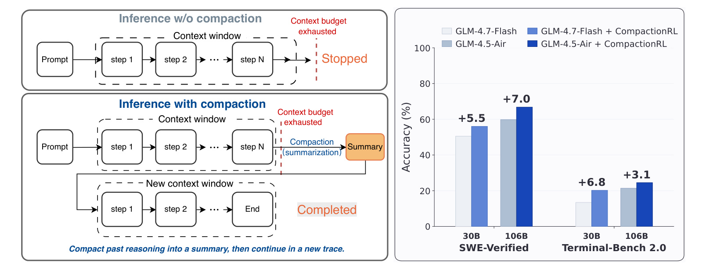
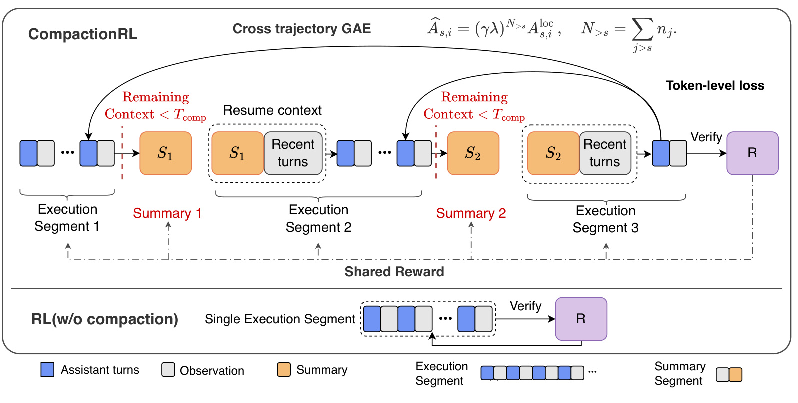
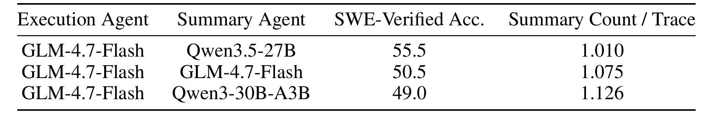
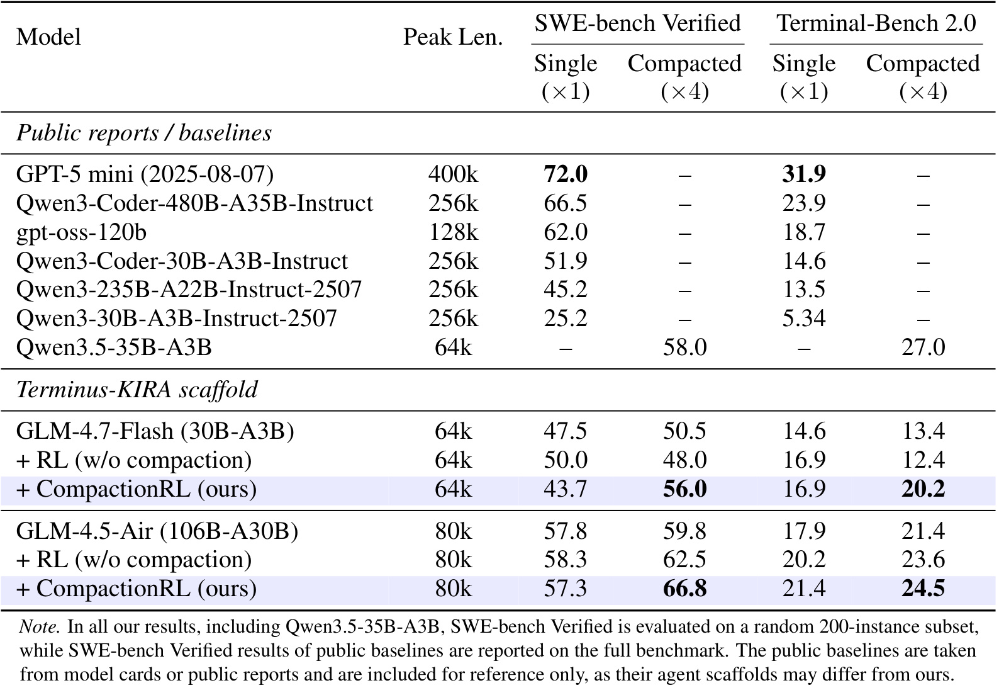
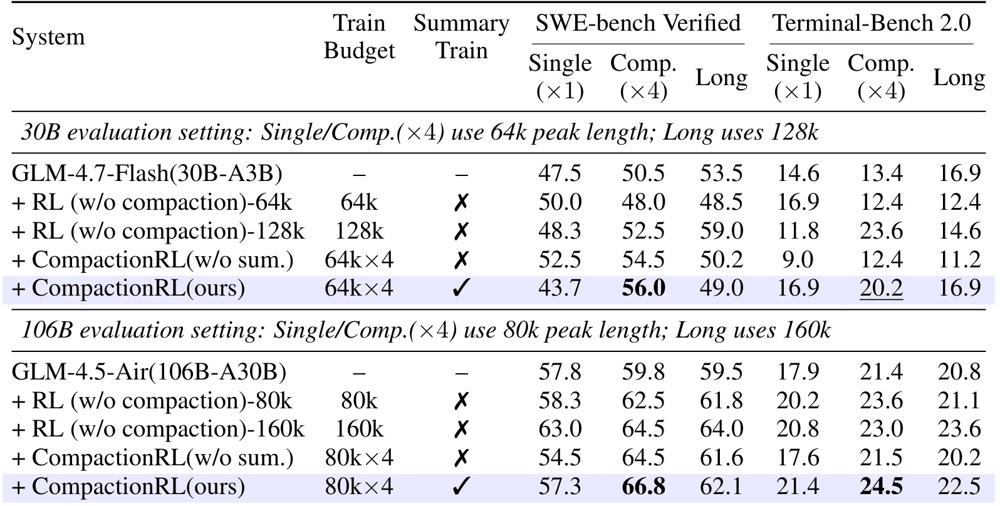
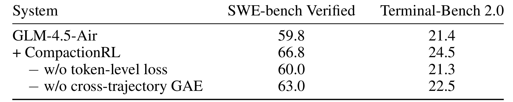
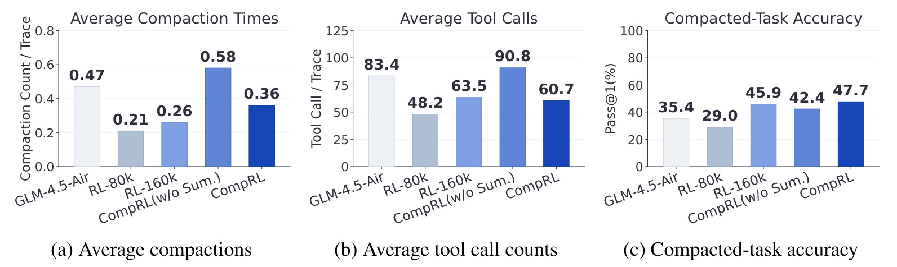
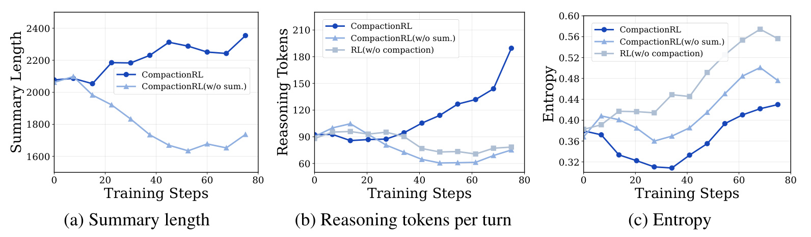

CompactionRL: Reinforcement Learning with Context Compaction for Long-Horizon Agents
论文链接：arXiv:2607.05378
作者：Yujiang Li, Zhenyu Hou, Yi Jing, Jie Tang, Yuxiao Dong
机构：Tsinghua University；前三位作者工作完成于 Z.AI 实习期间
一句话概括：CompactionRL 把“上下文压缩”从推理时的外部补丁变成 RL 训练里的可学习动作，让长程 coding agent 在固定工作窗口下同时学习执行任务和生成可继续执行的摘要，并用 token-level loss normalization 与 cross-trajectory GAE 处理压缩后 rollout 被切成多段带来的优化偏差。
1. 背景和问题
长程 agentic LLM 在软件工程、终端任务和网页交互中需要持续推理、行动、观察和修正，但交互历史会不断累积工具输出、中间推理、错误信息和部分解法，常在任务完成前超过有限上下文窗口；单纯扩大上下文长度成本高，也不能完全解决长序列利用退化，因此长程 RL 训练必须在固定上下文预算下保留可继续执行的任务状态。
这篇论文讨论的问题并不是普通的 prompt compression，也不是单纯让模型拥有更长上下文。它的场景是软件工程和终端任务这类 long-horizon agent：模型要在环境里反复发命令、读文件、看报错、改代码、再测试。每一步的 observation 都可能对后续很重要，但完整轨迹会不断膨胀。到上下文窗口接近上限时，如果直接截断历史，模型可能丢掉文件路径、失败命令、局部补丁和测试结果；如果不截断，任务就会因为预算耗尽而停止。论文把这种状态称为固定工作上下文预算下的长程执行矛盾。
已有做法大多把压缩当成推理时技巧：在窗口快满时由某个 summarizer 写一段摘要，然后把摘要和最近几轮对话拼回新窗口。这个想法直观有效，但一旦进入 RL 训练就变复杂了。摘要不是无害的中间文件，它决定了后续 rollout 能看到什么。摘要漏掉一个关键报错，后面的 agent 可能会重复探索；摘要写错一个文件状态，后续策略就会沿着错误方向优化。因此，压缩策略本身应该被任务奖励约束，而不是只靠外部人工规则或固定 summarizer。

Figure 1 左半部分把问题画得很直接：没有 compaction 时，agent 的历史随着 step 增长，窗口耗尽后只能停止；有 compaction 时，模型先把过去推理压缩成 summary，再用 summary 和新的上下文窗口继续执行。右半部分给出本文最重要的经验事实：在 SWE-bench Verified 和 Terminal-Bench 2.0 上，CompactionRL 在 30B 和 106B 两个 GLM 模型规模下都提升 compacted evaluation 的准确率。这个图之所以适合放在问题章节，是因为它把“为什么需要压缩”和“为什么要训练压缩”放在同一张图里：压缩不是为了让笔记更短，而是为了让任务在固定窗口下继续推进，并最终提升真实 agent benchmark 的 Pass@1。
论文的关键判断是：如果把每次压缩后的段落当成独立样本，传统 group-wise RL 方法会遇到统计结构错位。一个原始任务 rollout 可能因为触发多次 compaction 被切成多个 execution segment 和 summary segment，而这些段共享同一个最终 task reward。段数越多的 rollout 如果被简单重复计入 group statistics，就可能获得不成比例的权重；如果只在完整 rollout 层面归一化，又没法给摘要段和执行段里的 token 分配合理 advantage。也就是说，compaction 改变的不只是输入长度，还改变了 RL 样本、损失权重和 credit assignment 的形状。
因此 CompactionRL 的贡献可以概括成三层。第一层是把 context compaction 纳入 rollout collection，让策略在窗口将满时自己生成 summary 并继续新 trace。第二层是把 summary tokens 和 execution tokens 放入同一个 PPO 优化目标，并用最终任务奖励统一监督。第三层是为压缩轨迹设计两个优化修正：按 token 而不是按 segment 归一化 loss，避免长短段和多段 rollout 的权重偏置；再用 cross-trajectory GAE 把局部段内 advantage 按其距离最终结果的真实 token 间隔重新折扣。真正的新意在第三层，因为它把“摘要更好会有帮助”推进到“压缩后的 RL 该如何估计优势和分配损失”。
2. 方法
2.1 Compaction during Rollout Collection
CompactionRL 从 agent 的交互历史表示开始。论文把历史写成系统提示、用户任务和若干 assistant-observation pair 的序列，每个 pair 被视为不可拆开的原子步骤，因为工具调用和环境反馈不能在压缩时被硬切开。核心触发条件是当当前历史长度接近固定上下文预算时启动压缩。也就是说，训练时仍然尊重一个 peak context length，而不是把长轨迹强行塞进无限上下文。
符号解释：(s) 是 system prompt，(u) 是原始用户任务，(a_i) 是第 (i) 步 assistant action，(o_i) 是对应 observation，(C) 是工作上下文预算，(|h_t|) 是当前历史 token 长度，(T_{comp}) 是压缩阈值。这个条件强调的是“剩余预算不足”而不是固定轮数，因此不同任务会产生不同数量的压缩段。
触发后，模型不是调用外部摘要器，而是在当前策略 (\pi_\theta) 下生成 summary。论文给当前历史追加固定总结指令 (q_{sum})，要求保留原始目标、已完成动作、重要 observation、未解决错误、当前状态和可能下一步，然后采样摘要 (S_t)。随后新上下文由 system prompt、包含摘要的 resume template 和最近 (k) 个 assistant-observation pair 组成；默认 (k=2)，必要时减小以保证新上下文仍在预算内。
这一步的设计有两个细节值得注意。第一，summary 是同一策略生成的 action，因此它会被后面的 task reward 影响；第二，resume context 保留最近几步原始交互，避免摘要独自承担所有局部状态。换句话说，CompactionRL 没有把长程记忆完全压进一个摘要，而是在“压缩的长程状态”和“未压缩的短程状态”之间做组合。

Figure 2 是整篇方法的中心图。上半部分显示一个 compacted rollout 被切成 execution segment、summary segment、再 execution segment 的序列；每次剩余上下文小于阈值时，策略生成 summary，并用 summary 与 recent turns 恢复上下文继续执行。右侧的 token-level loss 和上方的 cross trajectory GAE 对应后文两个优化修正。下半部分是没有 compaction 的普通 RL，它只有单个 execution segment。这个对比说明 CompactionRL 并不是在普通 PPO 外面加一个前处理 summary，而是改变了 rollout collection、样本分段、奖励共享和 advantage 计算的整体结构。
2.2 Training Segments and Shared Reward
有了 compaction，完整 rollout 自然变成多个 generated-token segments：执行段负责解决任务，摘要段负责写可恢复状态。论文把完整轨迹记作 (\tau=(\sigma_1,\ldots,\sigma_K))，其中每个 (\sigma_s) 可能是 execution segment，也可能是 summarization segment。所有段共享最终任务奖励 (R(\tau))，并且摘要段也进入 RL objective。这里的 核心机制 是不再给 summary 单独设计“摘要质量分”，因为人工摘要指标未必等价于后续任务是否能继续完成；真正可靠的监督是任务最终是否通过。
这种共享奖励带来一个重要好处：模型可以学到“对解决任务有用的摘要”，而不是“看起来完整的摘要”。在 coding agent 里，有用信息可能是某个具体文件路径、某个测试失败栈、某个已经尝试但无效的补丁方向，甚至是一条“不要再运行某命令”的负面经验。传统摘要评估可能偏好语言完整度和覆盖率，但 CompactionRL 更关心 summary 作为后续 policy state 的价值。
论文后续用固定 execution agent、只替换 summary agent 的对照来支撑这一设计：summary 质量本身能改变最终 pass@1。这里先保留方法含义，实验章节再展开数字证据。方法层面的结论是，summary tokens 与 execution tokens 同属于同一策略的行为输出，它们共享最终任务奖励；如果摘要丢失后续执行所需状态，那么后面的执行段即便策略能力足够，也会在错误状态上继续优化。
2.3 Token-Level Loss for Length Imbalance
压缩会让不同 rollout 的段数和段长差异很大。有的任务可能不触发 compaction，有的任务会产生多个 execution segment 和 summary segment；summary 的长度也可能随任务复杂度变化。如果按 segment 或 sample 平均损失，触发更多压缩的 rollout 会被重复计权，短 summary 与长 execution 的影响也会失衡。因此论文选择在 batch 内所有 optimized assistant-token positions 上做 token-level loss normalization。
符号解释：(M) 是 batch 中所有被优化的 assistant token 位置集合，(y_{s,i}) 是第 (s) 个 segment 中第 (i) 个 token，(x_{s,i}) 是该 token 的条件上下文，(\rho_{s,i}) 是当前策略相对 rollout policy 的 token 级概率比，(\hat A_{s,i}) 是后面要修正的 advantage。这里的关键不是 PPO 形式本身，而是分母使用 (|M|)：它让每个可训练 token 获得同等平均权重，减少“段数多就权重大”的偏差。
这和普通长上下文 RL 的差别在于，普通 rollout 即使很长，也通常还能被看作一个连续样本；CompactionRL 里的一个任务可能被切成多个局部训练样本，但这些样本不是独立任务。token-level normalization 可以看作对 segment-count bias 的第一道修正。它不能单独解决时间信用分配，但至少防止优化目标因为切段方式不同而重排样本权重。
2.4 Cross-Trajectory Generalized Advantage Estimation
第二个问题更 subtle：如果每个 segment 独立计算 GAE，那么最终 task reward 会出现在每段局部序列末尾。对早期 segment 来说，这相当于把本来很远的最终结果“拉近”了，导致早期 summary 或 action 被过度归因。论文提出的 cross-trajectory GAE 用后续 segment 的 optimized token 数 (N_{>s}) 对局部 advantage 重新折扣，让早期 token 与最终 reward 的距离更接近完整拼接轨迹中的真实距离。
符号解释：(n_s) 是第 (s) 个 segment 的 optimized token 数，(N_{>s}=\sum_{j>s}n_j) 是同一 rollout 中后续 segment 的 optimized token 总数。第一条公式是段内 local GAE，第二条公式把该段 advantage 按后续 token 距离再折扣，第三条说明如果最终奖励在局部段尾出现，那么经过修正后 token ((s,i)) 的奖励折扣距离等价于完整 compacted rollout 中从该 token 到终点的距离。
风险点 在于这个修正仍然是近似，而不是完整地在未压缩的全轨迹上反向传播信用。它假设用 optimized token 数衡量跨段距离足够合理，也依赖 value function 跟得上 policy 更新。论文在训练设置里因此先做 value pretraining，并且每个 batch 做两次 value model update 和一次 policy update。工程上理解，CompactionRL 的方法不是“摘要越长越好”，而是“摘要作为策略动作必须接受长期结果的折扣式监督”；如果 critic 学不好或压缩触发策略不稳定，cross-trajectory GAE 的优势也会被削弱。
3. 实验结果
实验主要围绕 agentic coding tasks 展开，训练数据来自 SWE-Dev，评测使用 SWE-bench Verified 和 Terminal-Bench 2.0。论文比较两个模型规模：GLM-4.7-Flash 和 GLM-4.5-Air-SFT，后者由 GLM-4.7 生成轨迹后对 GLM-4.5-Air 做监督微调得到。RL 训练使用 slime 异步 RL 框架，global batch size 为 128，group size 为 1；GLM-4.7-Flash 的 context budget 是 64k，GLM-4.5-Air-SFT 是 80k。评测在 Harbor 环境和 Terminus-KIRA agent scaffold 下进行，每条轨迹最多 250 个交互轮次，最多 3 次 compaction。

Table 1 直接验证了 summary 不是可替换的中性模块。论文固定 execution agent 为 GLM-4.7-Flash，只替换 summary agent，SWE-Verified pass@1 从 Qwen3-30B-A3B 的 49.0 到 Qwen3.5-27B 的 55.5，相差 6.5 个百分点；平均 Summary Count / Trace 也从 1.126 变化到 1.010。这个结果说明，在同一个执行策略下，摘要质量足以改变最终任务成败。它为后续主实验提供了前置证据：如果 summary 只是一段无关紧要的压缩文本，训练 summary tokens 不会带来稳定收益；但如果 summary 本身改变任务状态，它就必须进入 RL，并由最终任务奖励来判断哪些信息真正值得保留。

Table 2 是主结果。对 GLM-4.7-Flash，base model 在 compacted evaluation 下 SWE-bench Verified 为 50.5、Terminal-Bench 2.0 为 13.4；普通 RL without compaction 变成 48.0 和 12.4，说明单窗口训练收益没有稳定迁移到压缩推理；CompactionRL 则达到 56.0 和 20.2，分别相对 base compacted 提升 5.5 和 6.8 点。对 GLM-4.5-Air，base compacted 是 59.8 和 21.4，普通 RL 是 62.5 和 23.6，CompactionRL 达到 66.8 和 24.5。这个表的阅读重点不是 public reports 中更大模型的绝对数值，而是在相同 scaffold 和相同 peak length 下，CompactionRL 在 compacted setting 一致优于同规模 base 与普通 RL。
一个容易误读的地方是 Single(×1) 列。CompactionRL 在单窗口禁用 compaction 时并不总是提升，例如 GLM-4.7-Flash 的 Single SWE 从 47.5 降到 43.7，GLM-4.5-Air 的 Single SWE 从 57.8 小幅降到 57.3。论文把这解释为 train-test mismatch：CompactionRL 训练的是 compaction-enabled execution，禁用 compaction 后，模型面对的执行状态和训练状态不一致，overlong 风险也更高。因此它的价值边界很明确：如果部署环境允许 test-time compaction，它能在固定 peak context 下扩展有效执行 horizon；如果部署环境必须单窗口运行，它不是无条件替代普通 RL。
从评测口径看，这个边界尤其重要。Compacted(×4) 不是把模型本身的 peak length 直接扩到四倍，而是在同一个 peak length 下最多允许三次压缩，让 agent 通过 summary 重新开窗口继续执行。这样得到的是“有效任务预算”增加，而不是“每一步都能看到完整原始历史”。所以 Table 2 的增益应理解为：在必须丢弃一部分原始轨迹时，训练过的 summary 更能保存后续执行所需状态，PPO 也更适应压缩后的状态分布。它不能证明长上下文本身不重要，也不能证明所有任务都应该压缩；它证明的是，当真实系统已经需要压缩时，把压缩动作纳入 RL 训练比只在推理时临时总结更可靠。

Table 3 进一步拆开两个因素：一是训练时是否使用 compaction-aware budget，二是 summary response 是否进入 RL loss。30B 设置下，CompactionRL(w/o sum.) 在 compacted SWE 上达到 54.5，完整 CompactionRL 为 56.0；Terminal-Bench compacted 从 12.4 提升到 20.2，差距更明显。106B 设置下，w/o summary training 的 compacted SWE 是 64.5，完整方法是 66.8；Terminal-Bench compacted 从 21.5 到 24.5。这个表说明，仅让模型在压缩历史上继续执行还不够，summary tokens 本身被任务奖励优化才是稳定收益来源。Long 列也很有用：它提供更大非压缩窗口作为参考，显示 CompactionRL 在短 peak length 加压缩的条件下可以接近甚至超过更长单窗口训练的效果。

Table 4 针对方法中最技术性的两块做消融，使用 GLM-4.5-Air-SFT 的 80k×4 compacted setting。完整 CompactionRL 在 SWE-bench Verified / Terminal-Bench 2.0 上是 66.8 / 24.5；去掉 token-level loss 后降到 60.0 / 21.3；去掉 cross-trajectory GAE 后降到 63.0 / 22.5。这个结果支持两个判断：第一，多段 compacted rollout 的 loss weighting 确实会影响性能，而且 token-level normalization 的贡献很大；第二，跨段 credit assignment 不是形式上的数学修饰，去掉后同样明显退化。也就是说，CompactionRL 的增益不只是因为多了 summary 这个动作，还来自对压缩轨迹优化结构的专门处理。

Figure 3 关注行为层面的变化。GLM-4.5-Air base 平均 compaction 次数为 0.47，CompactionRL(w/o Sum.) 为 0.58，完整 CompactionRL 降到 0.36；工具调用数上，w/o summary 变体最高，为 90.8，完整 CompactionRL 为 60.7；在会触发 compaction 的任务子集上，完整 CompactionRL 的 pass@1 为 47.7，高于 base 的 35.4 和 w/o summary 的 42.4。这个图说明收益不是简单来自“跑更多步”或“调用更多工具”。相反，训练过 summary 的模型在需要压缩的任务上更能保留可继续执行的信息，减少重复探索和冗余工具调用，同时提升最终完成率。

Figure 4 解释训练过程中发生了什么。完整 CompactionRL 的 summary length 随训练上升，而不训练 summary 的变体摘要长度下降；reasoning tokens per turn 也随训练增加，说明模型在可压缩状态下获得了更多有效推理预算；entropy 的增长更慢，提示策略更新更受控。这个图和 Table 1、Table 3 是连在一起的：摘要质量会影响任务，summary training 能提升 compacted evaluation，而训练动态显示模型确实学会生成更长、更细、更可操作的摘要。它也提醒我们不要把 compaction 理解成越短越好，agent 场景里摘要需要保留可执行状态，长度增加可能是有价值的。
整体实验结论比较清晰：CompactionRL 的优势集中在 compacted evaluation，而不是单窗口 evaluation；优势在两个模型规模、两个 coding agent benchmark 上都能观察到；summary training、token-level normalization 和 cross-trajectory GAE 都有独立证据支撑。限制也同样清楚。SWE-bench Verified 只随机抽取 200 个实例，public baselines 的 scaffold 不同，因此跨模型横向比较只能作参考；实验领域主要是 coding 和 terminal tasks，对网页、多模态、开放式规划等 agent 任务是否同样成立，还需要更多验证。
还有一个实验解读上的细节：普通 RL without compaction 并不是弱 baseline。它在一些 Single 列或较长 context reference 中可以提升性能，说明模型执行能力本身确实通过 RL 得到了加强；问题在于这种加强不一定能迁移到压缩历史后的状态。CompactionRL 的对照价值就在这里：它没有只比未训练模型更强，而是在同样做 RL 的前提下，让训练分布包含 summary-conditioned continuation，并让摘要段也承担 task reward。这一点对真实 agent 平台很关键，因为生产环境的失败往往不是“模型完全不会写代码”，而是“窗口切换后忘记了前面已经做过什么”。如果训练从未覆盖这种切换，压缩就会成为部署时的隐性分布偏移。
4. 总结
CompactionRL 的核心价值在于把上下文压缩从“推理时整理历史”的启发式操作，提升为“RL 训练中的可学习策略动作”。在长程 agent 任务里，summary 不是摘要笔记，而是后续策略的状态载体；它写得好不好，会直接影响 agent 是否记得任务目标、错误原因、当前补丁和下一步计划。论文用 Table 1 证明摘要质量足以改变最终结果，再把 summary tokens 纳入 PPO 目标，用最终任务奖励监督执行和摘要两类 token。
方法上的关键不是使用 PPO 这个名字，而是承认 compaction 会改变 rollout 的训练结构。一个任务被切成多个 segment 后，按 segment 平均会产生权重偏置，按局部段计算 GAE 会压缩时间距离。CompactionRL 用 token-level loss normalization 处理前者，用 cross-trajectory GAE 处理后者。Table 4 的消融说明这两个修正都有实际贡献，尤其 token-level normalization 对 compacted setting 的影响很大。
从工程角度看，这篇论文对长期运行 agent 系统的启发很直接：如果系统允许在执行中压缩上下文，就不应只在推理时写一个固定 prompt 让模型总结历史，而应该把“什么信息必须进入 summary”纳入训练和评估闭环。对 coding agent 来说，摘要里保留的往往不是高层结论，而是文件名、报错、已尝试方案和未完成约束。CompactionRL 的结果表明，训练模型生成这种可恢复状态，可以在不扩大 peak context length 的情况下提高长程任务完成率。
但它也不是通用无条件升级。首先，CompactionRL 对 compaction-enabled execution 有依赖，禁用 compaction 时可能出现 train-test mismatch。其次，cross-trajectory GAE 仍是近似信用分配，无法完全替代全轨迹价值建模。再次，实验集中在代码和终端任务，其他 agent 环境的 observation 结构、奖励稀疏性和压缩触发规律可能不同。最稳妥的结论是：当部署目标明确需要长程交互、允许多次上下文压缩、并且最终任务奖励可验证时，CompactionRL 提供了一套比外部摘要器更系统的训练范式；当任务短、窗口足够、或无法在推理时启用 compaction 时，它的收益需要重新验证。
如果把这篇论文放到更大的 agent 训练脉络里，它回答的是“长期状态该由谁负责学习”的问题。传统 memory、reflection 或 summarization 方案经常把状态维护交给外部工具，主策略只消费工具产物；CompactionRL 则把状态维护重新交给策略本身，并让任务奖励评价这种维护是否有效。这个选择会增加训练复杂度，需要 critic、段级轨迹组织和更细的 validator，但也减少了推理链路中不可训练组件造成的断层。对后续工作而言，最值得跟进的不是某个具体 GLM 分数，而是这种思路能否扩展到检索型 agent、网页 agent、企业知识库 agent 和多模态任务：只要任务会跨窗口持续推进，summary 就不只是压缩文本，而是可学习的状态转移操作。后续若加入自动压缩触发器，还要同时评估触发时机、摘要粒度和状态恢复成本。